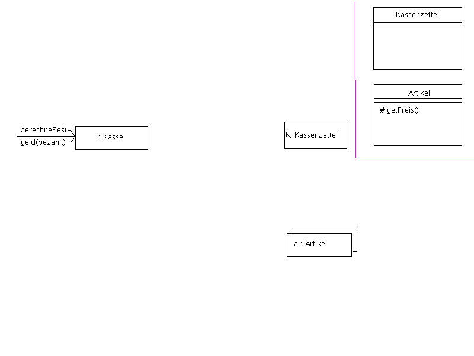
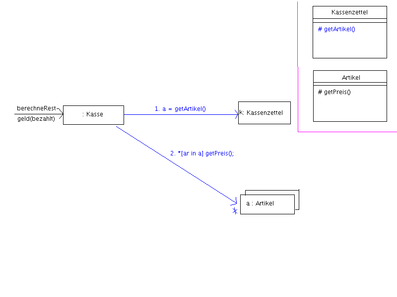
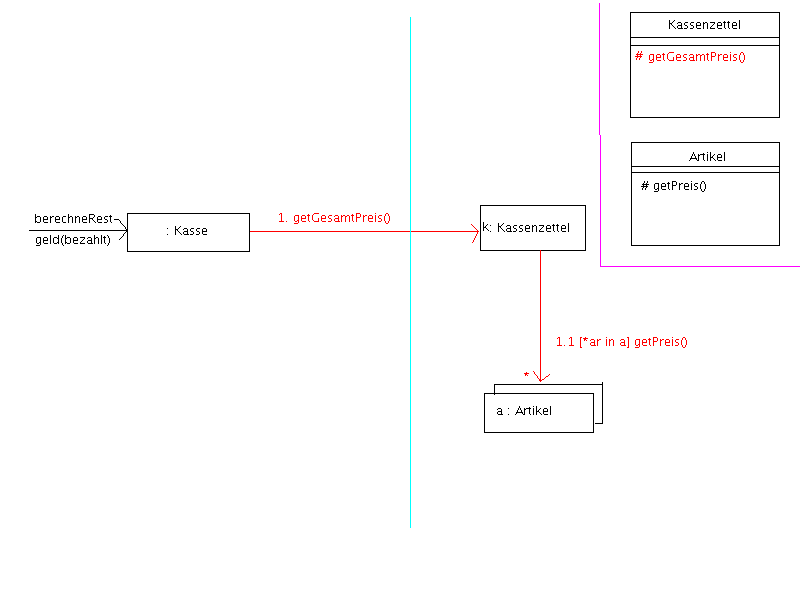

$Freiwilliger meldet sich bei Teamspeak und behauptet, dass er zur Korrektur der Aufgabe 47 auf Übungsblatt 11 (4711 ;-) ) ne Frage hat. Wie üblich, das alte Kassenbeispiel... (aber ohne Erdbeerjoghurt mit australischer Baumrinde...)
[$Tutor lädt "Vorlage" für diese Aufgabe ins Whiteboard, siehe wb_basis.*]
$Freiwilliger zeichnet in dieses Diagramm seine Lösung ein (wb_falsch.*), die "richtige" Lösung wäre wb_ok.*. Der Fairness halber sollte er die malen und nicht laden ;)
$Tutor verbessert das Diagramm so gut es ihm gelingt mit ner anderen Farbe, so dass es nachher rudimentäre Ähnlichkeit zu wb_richtig.png hat. Prinzipiell soll hervorgehoben werden, dass das Herumreichen von Referenzen auf die Artikel die Kopplung zwischen Kasse und den Artikeln erhöht, was wegen "Low Coupling" schlecht[tm] ist.


